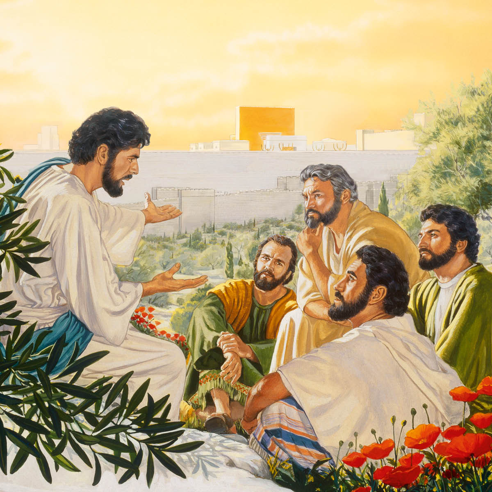

Jerusalem and Surrounding Area

Temple
Garden of Gethsemane (?)
Governor’s Palace
House of Caiaphas (?)
Palace Used by Herod Antipas (?)
Pool of Bethzatha
Pool of Siloam
Sanhedrin Hall (?)
Golgotha (?)
Akeldama (?)
Go to day: Nisan 8 | Nisan 9 | Nisan 10 | Nisan 11
Nisan 8 (Sabbath)
SUNSET (Jewish days start and end at sunset)
Arrives in Bethany six days before the Passover
SUNRISE
SUNSET
Nisan 9
SUNSET
Dines with Simon the leper
Mary anoints Jesus with nard
Jews come to visit Jesus and Lazarus
SUNRISE
Triumphal entry into Jerusalem
Teaches in the temple
SUNSET
Nisan 10
SUNSET
Spends the night in Bethany
SUNRISE
Early trip into Jerusalem
Cleanses the temple
Jehovah speaks from heaven
SUNSET
Nisan 11
SUNSET
SUNRISE
 Teaches in the temple, using illustrations
Condemns Pharisees
Notes widow’s contribution
On Mount of Olives, foretells Jerusalem’s fall and gives sign of future presence